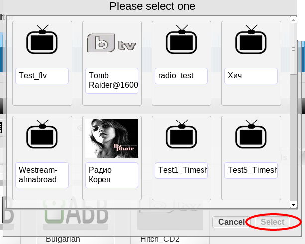
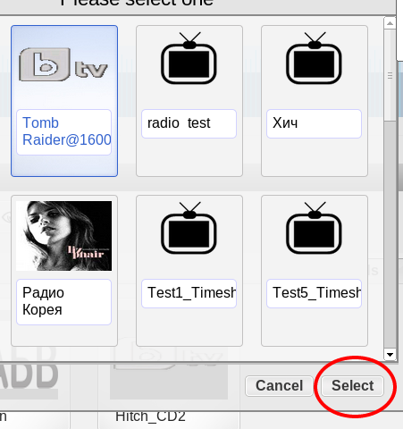
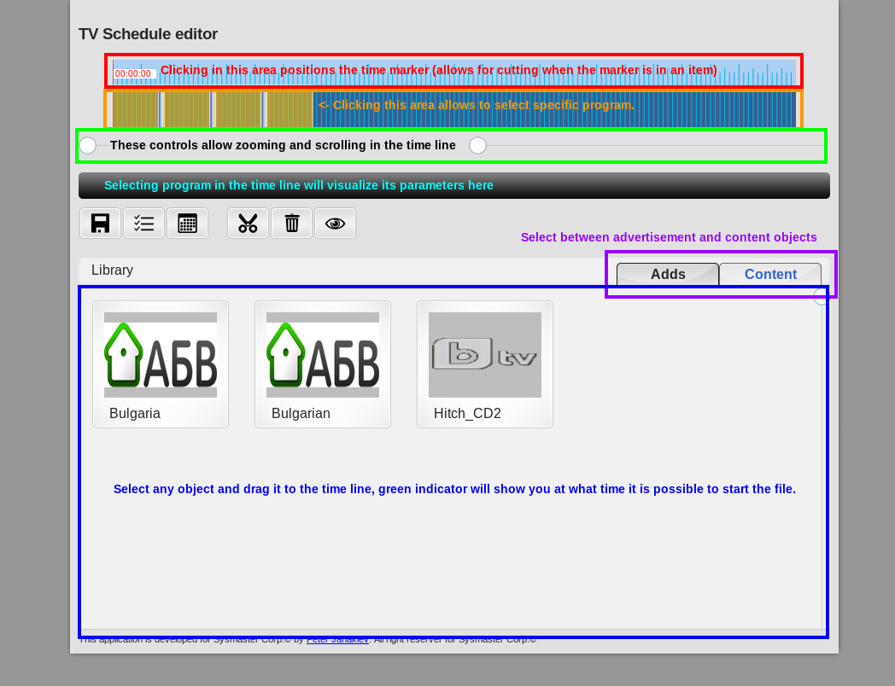
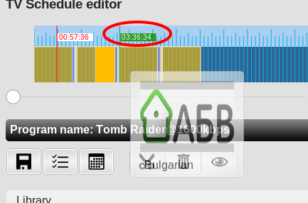
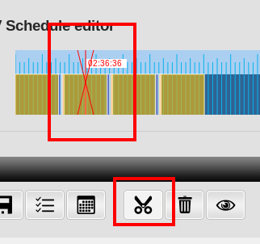
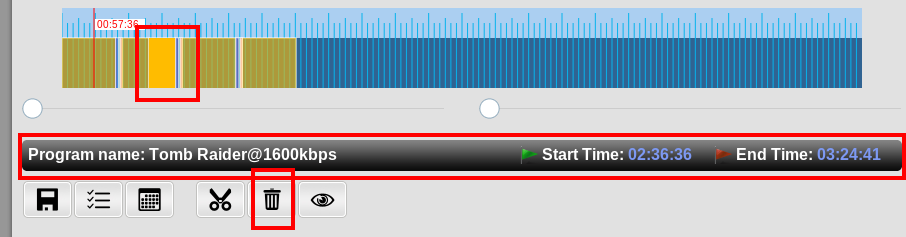

Once the scheduler is loaded the user is presented with the channel selection menu automatically.
Initial screen:

As seen in the screenshot the user is expected to select a channel to view. Channel can be selected by clicking on it.

Once a channel is selected the select button can be clicked to activate the selection and start working with the channel. Alternatively the desired channel can be double clicked to activate it.
The channel schedule for the current date will then be loaded. Below is presented the default view of the editor. It consists of a time line representing 24 hours starting from 0:00 and finishing at 24:00 of the date. Below it there are two controls: on the left is the zoom control, allowing to view more detailed time frame and on the right is the scroll control allowing navigation when the zoom level is higher and the whole duration cannot be represented directly on screen.
Below the controls the dark toolbar is used to indicate the currently selected program in the schedule and it will be empty until a program is selected in the time line control. Once a program is selected its title, start and end times will be displayed.
At the bottom is the media library: tabbed collection of all your files that can be used to construct the TV schedule. The files are grouped by its type: adds are all files marked as advertisement and content are all other files
Initial view of the editor:
To add a new file to the schedule simply drag it from the media library and drop it in the desired time segment in the time line. Once the mouse is over the time line a green flag will show you the exact start time that will be assigned to the file. Note that the schedule supports only subsequent time framing and thus it will try to 'glue' together file dropped after the last one (i.e. in time line zone not occupied by another file).
Adding files:

Sometimes it is desirable to stop a file in the middle and play some advertisement to the users in the schedule. The action in this application is called 'Cut' and is performed as follows:
With the mouse click on the time line's time marker zone until you have selected the desired time to interrupt the file playback. The time of the interruption will be displayed as white flag with red digits and will be time offset from the beginning of the date. Once the appropriate time is selected, press the cut button. A small animation will be applyed to assert the successful performance of the action. If cutting is not possible in the current time flag position the action will be ignored.
How cutting files works:

Once you have a cut you can treat it as any other two file and add in between as see fit.
Some times you would want to remove a file from the schedule, being put there by mistake or remove parts of a movie that was cut. To do so one first must select the scheduled item to ve removed by clicking on its colorful representation. Clicking on it will display its details in the dark program bar. Make sure this is the item you really want to remove and then press the delete button. The item will be removed immediately.
Deleting items:

After you complete your work and the schedule looks as desired the save button can be pressed to save the schedule on the server.
Once this is done another TV program can be edited or the date can be changed to another one. Note that should no data exists for the selected channel on the selected date the time line will be empty, but can be used as in the default case by simply continue adding items to it.
Note that if your last file exceeds the 24:00 hour it will be cut at that position and the new date schedule will be activated on the server when broadcasting to your users so make sure to append the movie in the next date in the same time it was stopped if you want to provide fluent experience to your users. In next release there will be a possibility to do this automatically.